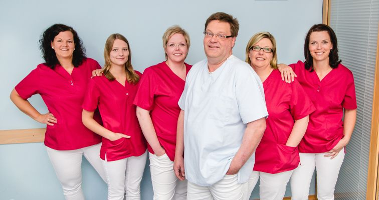
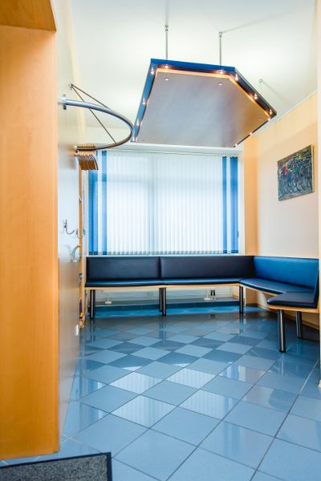
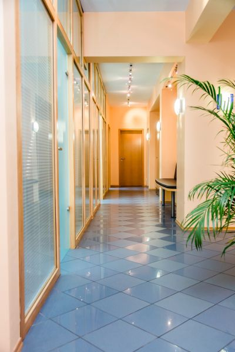
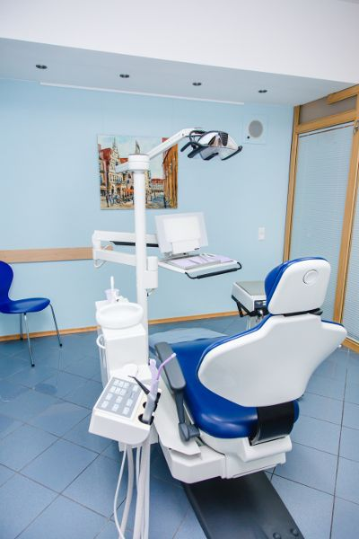
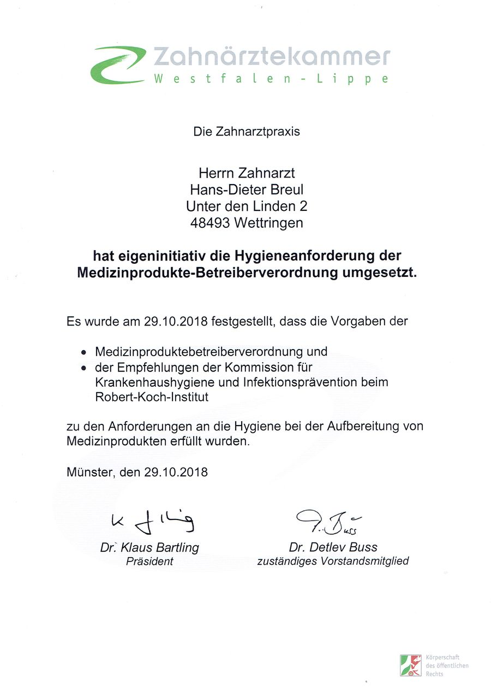

Seit 1998 Unter den Linden 2
Eine Praxis im Ort, in der man sich kennt: Zahnarzt Hans-Dieter Breul behandelt mit seinem Team Patientinnen und Patienten jeden Alters aus Wettringen und Umgebung.
Hans-Dieter Breul, Zahnarzt
Zahnarzt mit Approbation in Deutschland, Mitglied der Zahnärztekammer Westfalen-Lippe und der Kassenzahnärztlichen Vereinigung Westfalen-Lippe. Seit 1998 in eigener Praxis in Wettringen. Behandlungsspektrum: Vorsorge, Füllungen, Zahnersatz, Zahnfleischbehandlung, Wurzelbehandlung, Schienen, Zahnentfernung und Behandlung in Vollnarkose in Zusammenarbeit mit der Fachpraxis für Anästhesiologie Dr. med. Günther Mühlenbernd.
Angaben aus dem Impressum und der Leistungsübersicht der bisherigen Website. Werdegang und Fortbildungen ergänzt die Praxis.
Das Team
Fünf Mitarbeiterinnen kümmern sich um Empfang, Assistenz und Prophylaxe. Stand: Teamseite der bisherigen Website; die Praxis aktualisiert Namen und Fotos.

Die Räume
Hell, ruhig und mit kurzen Wegen: Wartezimmer, Flur und Behandlungszimmer in Blau und hellem Holz.



Hygiene, von der Kammer bestätigt
Die Praxis hat die Hygieneanforderungen der Medizinprodukte-Betreiberverordnung und die Empfehlungen des Robert Koch-Instituts eigeninitiativ umgesetzt. Die Zahnärztekammer Westfalen-Lippe hat das am 29. Oktober 2018 schriftlich festgestellt.
Das Zertifikat können Sie in der Praxis einsehen.

Anfahrt und Praktisches
Adresse
Zahnarztpraxis Hans-Dieter Breul
Unter den Linden 2
48493 Wettringen
Parken
Vor der Praxis stehen ausreichend kostenlose Parkplätze zur Verfügung.
Barrierefrei
Der Zugang zur Praxis ist barrierefrei über eine Rollstuhlrampe möglich. Sagen Sie uns gern vorher Bescheid, wenn Sie Hilfe brauchen, dann holen wir Sie am Eingang ab.
Sprechzeiten
| Mo | 8.30–12.00 und 14.30–18.00 Uhr |
|---|---|
| Di | 8.30–12.00 und 14.30–19.00 Uhr |
| Mi | 8.30–12.00 Uhr |
| Do | 8.30–12.00 und 14.30–19.00 Uhr |
| Fr | 8.30–12.00 Uhr |
und nach Vereinbarung. Telefon 02557 985808, Fax 02557 985820.
Kurze Nachricht an die Praxis
Sie möchten einen Termin, einen Rückruf oder haben eine Frage? Schreiben Sie uns, wir melden uns. Am schnellsten geht es telefonisch unter 02557 985808.
Bitte beschreiben Sie hier keine Beschwerden oder Diagnosen. Das besprechen wir in Ruhe am Telefon oder in der Praxis.
Danke, Ihre Nachricht ist angekommen.
So würde es in der fertigen Website laufen: Die Praxis bekommt Ihre Nachricht per E-Mail und meldet sich in der Regel am nächsten Werktag während der Sprechzeiten. Bei Schmerzen rufen Sie bitte direkt an: 02557 985808.